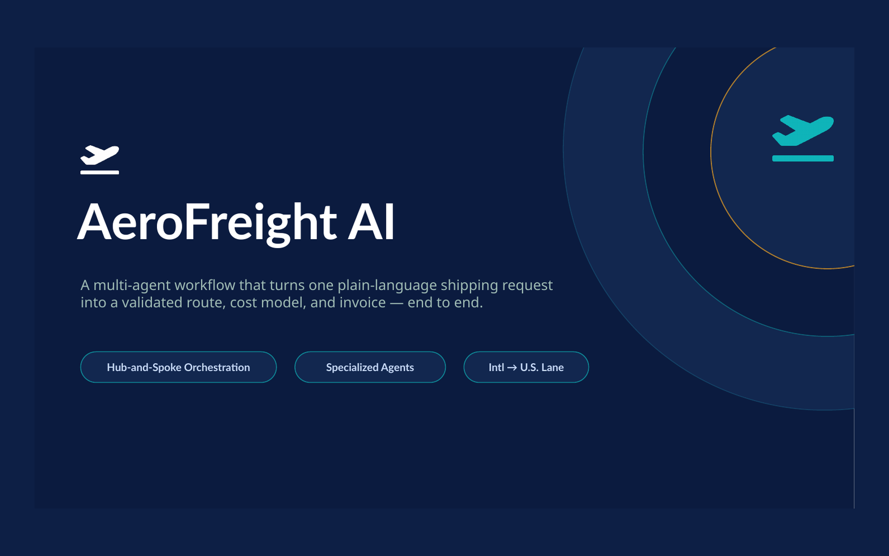
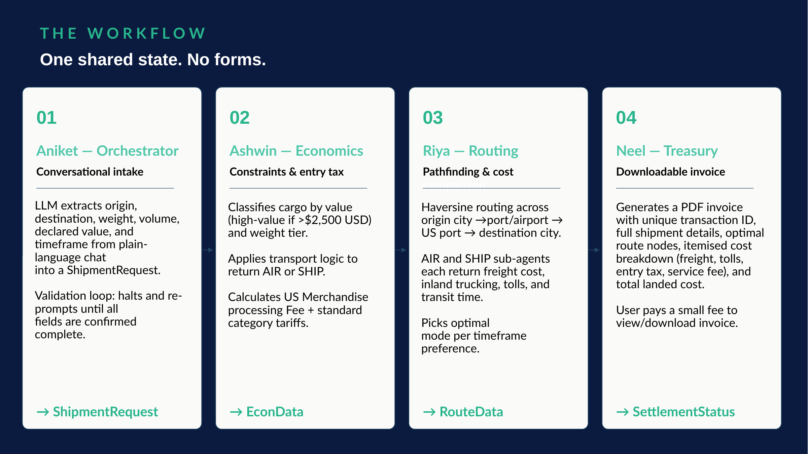
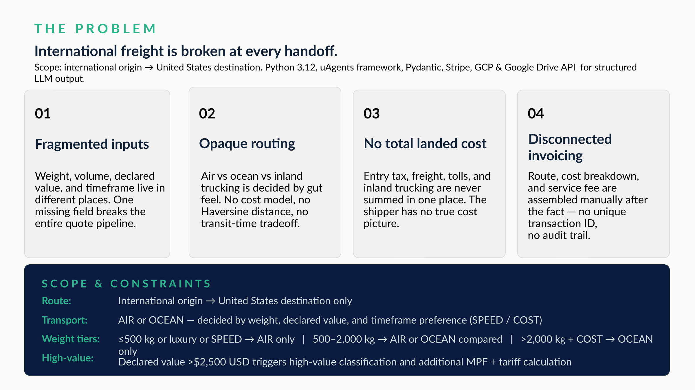

AeroFreight AI

One shipping request, one coordinated workflow.
AeroFreight AI is a multi-agent freight-planning system that turns a plain-language shipment request into a validated route, cost model, and invoice. The workflow coordinates specialized agents for intake, economics, routing, and settlement.

Routing and cost comparison across air and ocean paths.
I owned the routing portion of the workflow. The routing layer calculates Haversine paths from origin city to port or airport, through a U.S. entry point, and onward to the destination. AIR and SHIP sub-agents return freight cost, inland trucking, tolls, and transit time before the system selects a mode based on the user's speed-versus-cost preference.
Separate decisions, shared state.
Rather than one monolithic process, each agent handled a focused responsibility and returned structured data to the shared workflow. That made routing, tax logic, and invoicing independently understandable while still producing one end-to-end result.
